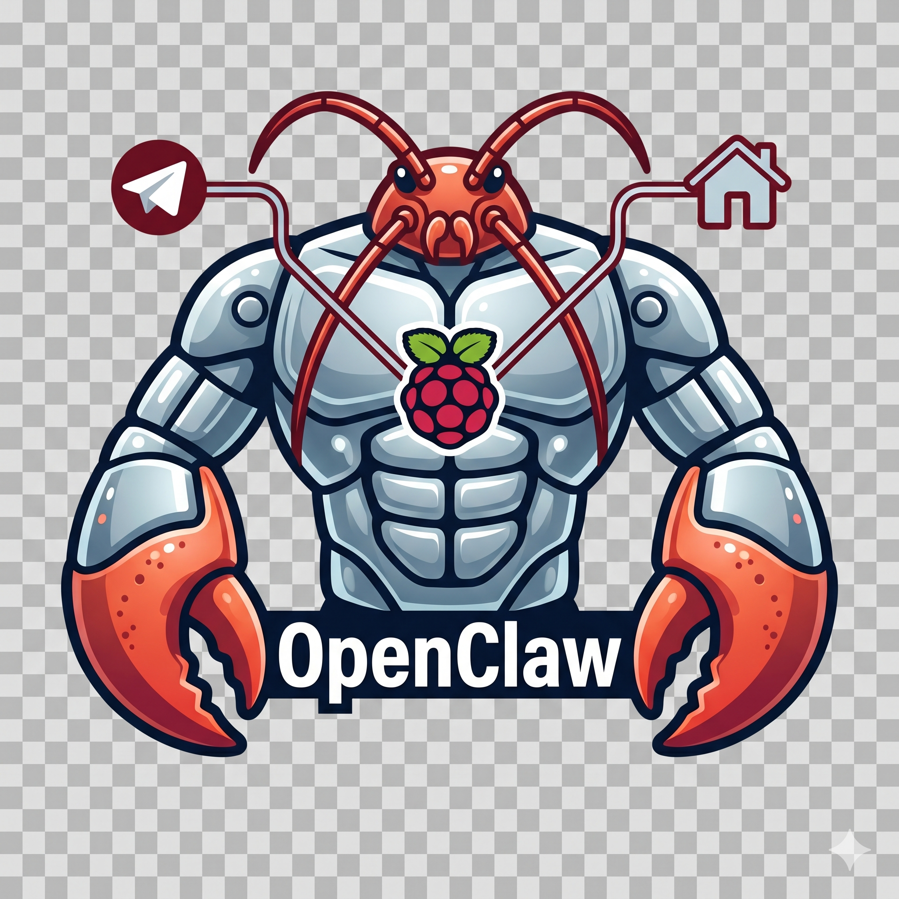

OpenClaw · GuidaDal primo “hatch” al team multi-agente: tutto ciò che serve per padroneggiare il lobster digitale più virale del 2026. In italiano, capitolo per capitolo.
Che tu non abbia mai aperto un terminale o stia per scrivere skill personalizzate, c'è un percorso per te.
Non hai mai usato il terminale, ma vuoi un assistente AI personale. Istruzioni passo-passo e concetti spiegati da zero.
Hai già installato OpenClaw o strumenti simili e vuoi sbloccarne il pieno potenziale: workflow, integrazioni, multi-agente.
Sei sviluppatore o power user: skill custom, cron complessi, deploy su VPS, architettura interna del Gateway.
Ogni parte ha la sua sezione e i suoi capitoli numerati progressivamente da 1 a 22, più un capitolo extra e cinque appendici.
Le fondamenta concettuali: cos'è un agente autonomo e qual è la sua anatomia interna.
Scelta dell'ambiente, sandboxing, installazione e collegamento ai canali.
Dall'onboarding dell'agente ai primi workflow pronti, fino alle integrazioni.
Quando un solo agente non basta: progettare, instradare e coordinare un team.
Il modello di rischio, come difendersi e come gestire la spesa LLM.
Care and feeding dell'agente: diagnosi, riparazione, backup e affinamento.
Skill custom, cron complessi, deploy su cloud e l'architettura del Gateway.
L'ecosistema attorno a OpenClaw e cosa significa avere un collega digitale.
Un progetto che mette insieme tutto il libro: l'assistente vocale di casa, locale e open-source, su Raspberry Pi 5.
Materiali di riferimento rapido da tenere a portata di mano.
Tre percorsi consigliati a seconda di quanto vuoi spingerti — e di quanto tempo hai.
Salti il capitolo Docker/sandbox per arrivare prima all'agente funzionante, ma leggi subito sicurezza e costi prima di lasciarlo correre da solo.
Aggiungi il capitolo sandbox e quello sulle integrazioni: la base solida prima di automatizzare la tua vita.
Tutto il libro, più l'Appendice C per i template SOUL.md da cui partire per i tuoi archetipi di agente.
Il capitolo extra costruisce un assistente vocale domestico interamente locale — niente cloud obbligatorio, niente abbonamenti, niente pubblicità. Solo un lobster digitale che ti risponde dal salotto.
Nel 2026 Alexa ha messo la pubblicità e Google ha messo da parte l'Assistant. Dall'altra parte, lo stack voice open-source è maturato: openWakeWord, Whisper e Piper girano su un Raspberry Pi da salotto. Aggiungi un agente vero come OpenClaw e “Ehi Claw, domani vado a Milano, organizza tutto” smette di essere fantascienza.
Prima di parlare di cavi e systemd, vale la pena immaginare cosa cambia nella giornata quando HomeClaw funziona.
Naviga le cartelle direttamente su GitHub: ogni file .md viene renderizzato e i link tra capitoli funzionano. Oppure clona il repo e aprilo in Obsidian o VS Code.
# clona e leggi in locale
git clone https://github.com/angelogeminiani/openclaw-la-guida-completa.git
cd openclaw-la-guida-completa
Con Pandoc generi un volume unico, pronto per la stampa A5 o per il lettore ebook.
# PDF unico (richiede LaTeX) pandoc README.md PARTE-*/[0-9]*.md \ capitolo-extra-homeclaw.md \ Appendici/[A-D]-*.md \ --lua-filter=tools/strip-external-links.lua \ -o openclaw-guida.pdf --toc --toc-depth=2 # ePub pandoc README.md PARTE-*/[0-9]*.md \ capitolo-extra-homeclaw.md Appendici/[A-E]-*.md \ -o openclaw-guida.epub --toc --toc-depth=2
OpenClaw ha accesso completo al computer su cui gira — filesystem, rete, comandi shell, browser, email, calendario. Questo lo rende potente e pericoloso.
Non installarlo mai su un computer in uso attivo o con dati sensibili: usa sempre un dispositivo dedicato o un VPS isolato. Leggi il Capitolo 13 prima di esporlo a internet o di dargli accessi in scrittura.